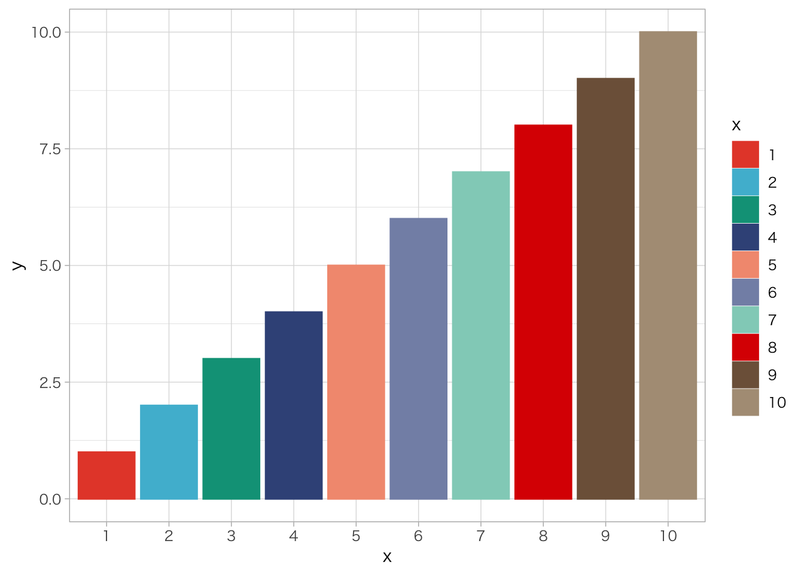
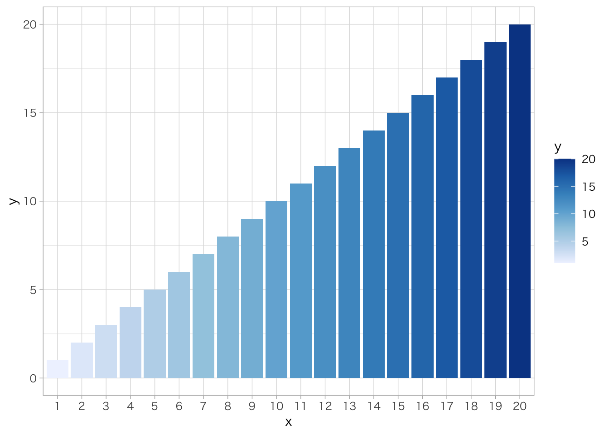
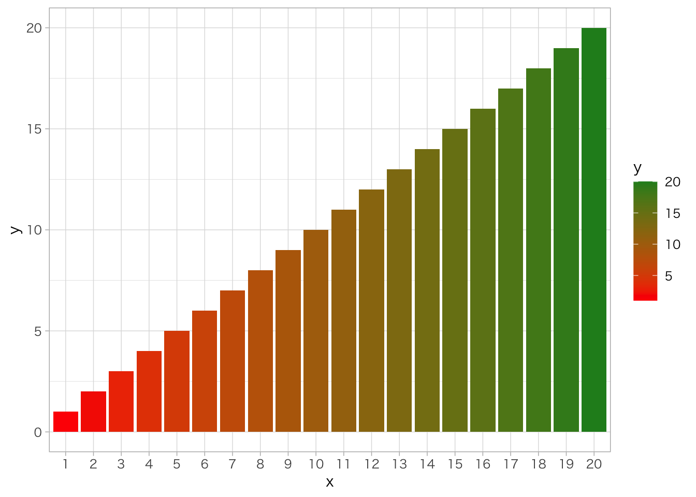
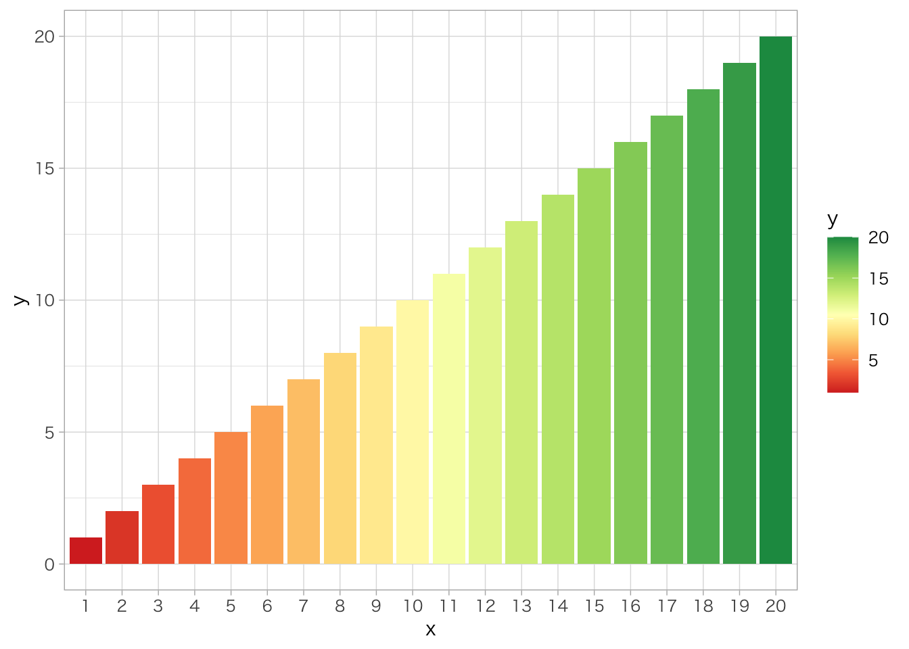
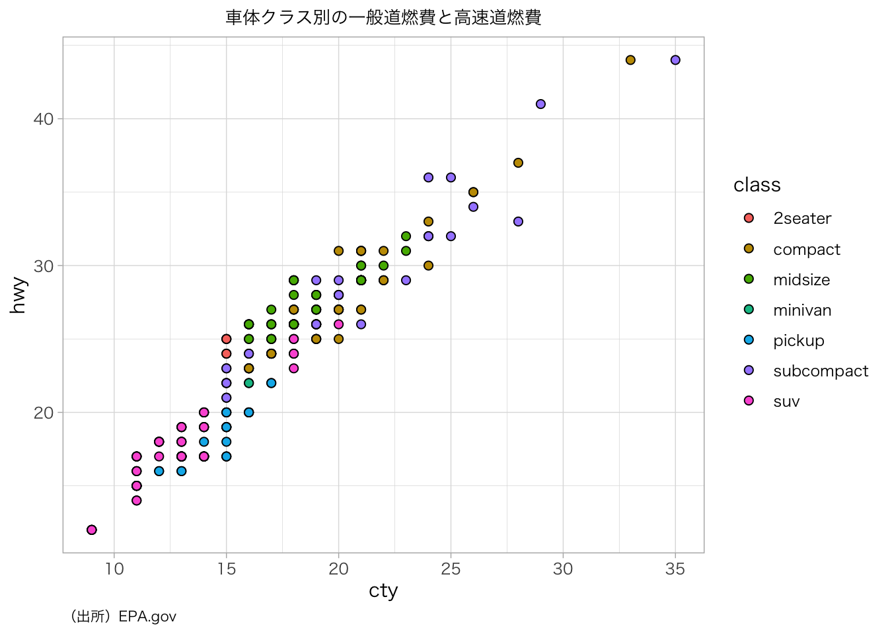
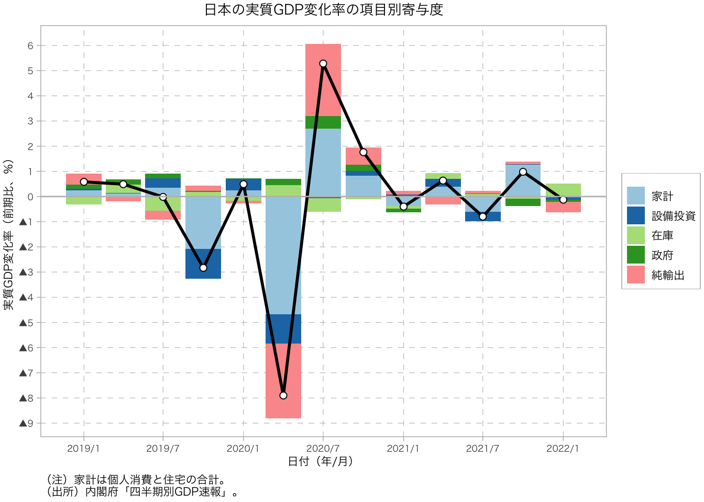
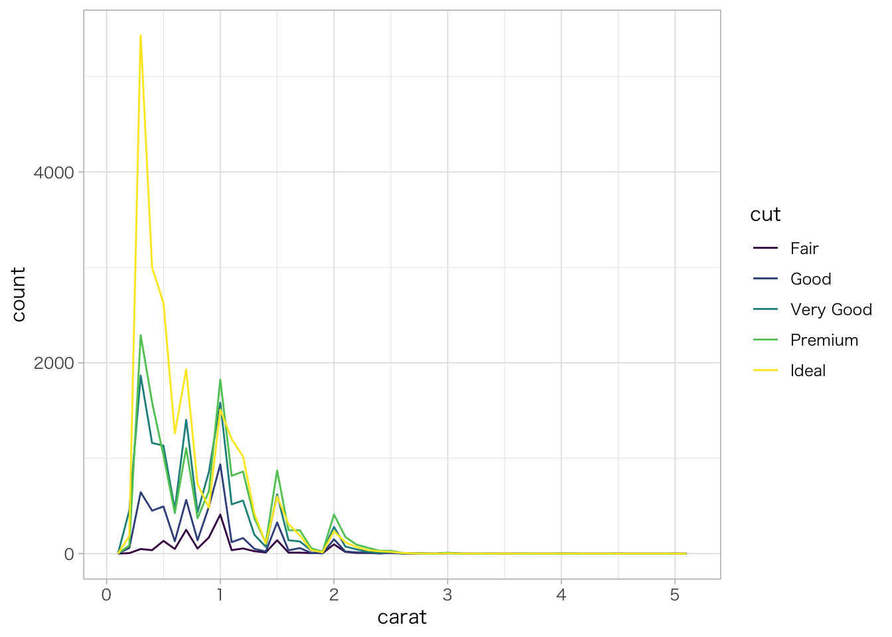

6 探索的データ分析
第6章「探索的データ分析（Exploratory Data Analysis）」では、データの内容を理解するための方法を解説します。これは、本格的な統計モデルを構築する方針を立てるための重要なプロセスです。
Wickham & Grolemund（2017）は、探索的データ分析について次のように説明しています。
- 分析対象のデータについて問いを立てる。
- 可視化、変換、モデル化により、問いに対する解を探る。
- 得られた解をもとに、新たな問いを立てる。
- このサイクルを繰り返す。
このように、探索的データ分析には本来決まったやり方が存在するわけではありません。とはいえ、「問いの立て方」や「解の探り方」には一般的によく利用される手法があるため、この章ではそうした手法について解説します。
6.1 第6章の準備
6.2 データの中身（記述統計量）
まず、データが何を含んでいるか確認します。
summary()関数は、各変数の記述統計量を出力する関数です。数値型の変数は、平均、中央値、最大値、最小値、四分位数が、文字列等のカテゴリカル変数は、要素毎のサンプル数が出力されます。
psych::describe()関数は、各変数の記述統計量や分布に関する情報を出力する関数です。平均、中央値、標準偏差に加え、刈り込み平均（trimmed）、中央絶対偏差（mad）、レンジ（最大値と最小値の差）、歪度（skew）、尖度（kurtosis）、標準誤差（se）が出力されます。
# データをコンソールに出力
diamonds## # A tibble: 53,940 x 10
## carat cut color clarity depth table price x y z
## <dbl> <ord> <ord> <ord> <dbl> <dbl> <int> <dbl> <dbl> <dbl>
## 1 0.23 Ideal E SI2 61.5 55 326 3.95 3.98 2.43
## 2 0.21 Premium E SI1 59.8 61 326 3.89 3.84 2.31
## 3 0.23 Good E VS1 56.9 65 327 4.05 4.07 2.31
## 4 0.29 Premium I VS2 62.4 58 334 4.2 4.23 2.63
## 5 0.31 Good J SI2 63.3 58 335 4.34 4.35 2.75
## 6 0.24 Very Good J VVS2 62.8 57 336 3.94 3.96 2.48
## 7 0.24 Very Good I VVS1 62.3 57 336 3.95 3.98 2.47
## 8 0.26 Very Good H SI1 61.9 55 337 4.07 4.11 2.53
## 9 0.22 Fair E VS2 65.1 61 337 3.87 3.78 2.49
## 10 0.23 Very Good H VS1 59.4 61 338 4 4.05 2.39
## # ... with 53,930 more rows# データの変数名を出力
colnames(diamonds)## [1] "carat" "cut" "color" "clarity" "depth" "table" "price"
## [8] "x" "y" "z"# データの記述統計量を出力
summary(diamonds)## carat cut color clarity depth
## Min. :0.2000 Fair : 1610 D: 6775 SI1 :13065 Min. :43.00
## 1st Qu.:0.4000 Good : 4906 E: 9797 VS2 :12258 1st Qu.:61.00
## Median :0.7000 Very Good:12082 F: 9542 SI2 : 9194 Median :61.80
## Mean :0.7979 Premium :13791 G:11292 VS1 : 8171 Mean :61.75
## 3rd Qu.:1.0400 Ideal :21551 H: 8304 VVS2 : 5066 3rd Qu.:62.50
## Max. :5.0100 I: 5422 VVS1 : 3655 Max. :79.00
## J: 2808 (Other): 2531
## table price x y
## Min. :43.00 Min. : 326 Min. : 0.000 Min. : 0.000
## 1st Qu.:56.00 1st Qu.: 950 1st Qu.: 4.710 1st Qu.: 4.720
## Median :57.00 Median : 2401 Median : 5.700 Median : 5.710
## Mean :57.46 Mean : 3933 Mean : 5.731 Mean : 5.735
## 3rd Qu.:59.00 3rd Qu.: 5324 3rd Qu.: 6.540 3rd Qu.: 6.540
## Max. :95.00 Max. :18823 Max. :10.740 Max. :58.900
##
## z
## Min. : 0.000
## 1st Qu.: 2.910
## Median : 3.530
## Mean : 3.539
## 3rd Qu.: 4.040
## Max. :31.800
## # データの記述統計量や分布に関する情報を出力
psych::describe(diamonds)## vars n mean sd median trimmed mad min max
## carat 1 53940 0.80 0.47 0.70 0.73 0.47 0.2 5.01
## cut* 2 53940 3.90 1.12 4.00 4.04 1.48 1.0 5.00
## color* 3 53940 3.59 1.70 4.00 3.55 1.48 1.0 7.00
## clarity* 4 53940 4.05 1.65 4.00 3.91 1.48 1.0 8.00
## depth 5 53940 61.75 1.43 61.80 61.78 1.04 43.0 79.00
## table 6 53940 57.46 2.23 57.00 57.32 1.48 43.0 95.00
## price 7 53940 3932.80 3989.44 2401.00 3158.99 2475.94 326.0 18823.00
## x 8 53940 5.73 1.12 5.70 5.66 1.38 0.0 10.74
## y 9 53940 5.73 1.14 5.71 5.66 1.36 0.0 58.90
## z 10 53940 3.54 0.71 3.53 3.49 0.85 0.0 31.80
## range skew kurtosis se
## carat 4.81 1.12 1.26 0.00
## cut* 4.00 -0.72 -0.40 0.00
## color* 6.00 0.19 -0.87 0.01
## clarity* 7.00 0.55 -0.39 0.01
## depth 36.00 -0.08 5.74 0.01
## table 52.00 0.80 2.80 0.01
## price 18497.00 1.62 2.18 17.18
## x 10.74 0.38 -0.62 0.00
## y 58.90 2.43 91.20 0.00
## z 31.80 1.52 47.08 0.006.3 データの分布
次に、データに含まれる変数がどのように分布しているかを、第5章で解説したggplot2パッケージの関数を使用して可視化します。
離散型変数の度数分布
離散型変数の度数分布を出力するにはdplyr::count()関数を使用します。
diamonds %>%
dplyr::count(cut)## # A tibble: 5 x 2
## cut n
## <ord> <int>
## 1 Fair 1610
## 2 Good 4906
## 3 Very Good 12082
## 4 Premium 13791
## 5 Ideal 21551離散型変数の度数分布を可視化するには、度数棒グラフを使用します。
diamonds %>%
ggplot(mapping = aes(x = cut)) +
geom_bar()
連続型変数の度数分布
連続型変数の度数分布を出力するには、dplyr::count()関数とggplot2::cut_width()関数を使用します。
diamonds %>%
dplyr::count(ggplot2::cut_width(carat, 0.5))## # A tibble: 11 x 2
## `ggplot2::cut_width(carat, 0.5)` n
## <fct> <int>
## 1 [-0.25,0.25] 785
## 2 (0.25,0.75] 29498
## 3 (0.75,1.25] 15977
## 4 (1.25,1.75] 5313
## 5 (1.75,2.25] 2002
## 6 (2.25,2.75] 322
## 7 (2.75,3.25] 32
## 8 (3.25,3.75] 5
## 9 (3.75,4.25] 4
## 10 (4.25,4.75] 1
## 11 (4.75,5.25] 1連続型変数の度数分布を可視化するには、ヒストグラムを使用します。
diamonds %>%
ggplot(mapping = aes(x = carat)) +
geom_histogram(binwidth = 0.5)
連続型変数の度数分布をグループ別に可視化するには、geom_freqpoly()関数を使用します。
diamonds %>%
ggplot(mapping = aes(x = carat, color = cut)) +
geom_freqpoly(binwidth = 0.1)連続型変数の度数を標準化して密度をグループ別に可視化するには、mapping = aes(y = ..density..)を指定して、geom_fredpoly()関数を使用します。
diamonds %>%
ggplot(mapping = aes(x = price, y = ..density.., color = cut)) +
geom_freqpoly(binwidth = 500)
外れ値
外れ値や異常値をグラフで確認するには、ヒストグラムを使用し、coord_cartesian()関数のylim引数にY軸の下限・上限値を指定して、Y軸方向に図表を拡大します。
なお、scale_y_continuous()関数のlimits引数に下限・上限を指定する方法でもY軸の表示範囲を変えることができますが、下限・上限の範囲外にあるデータが表示されなくなるため、単に拡大するだけであればcoord_cartesian()関数を用いるほうが良いでしょう。
diamonds %>%
ggplot(mapping = aes(x = y)) +
geom_histogram() +
coord_cartesian(ylim = c(0, 50))## `stat_bin()` using `bins = 30`. Pick better value with `binwidth`.
グループ別に外れ値を可視化する場合は、箱ひげ図を使用します。
diamonds %>%
ggplot(mapping = aes(x = cut, y = carat)) +
geom_boxplot()
6.4 データの関係性
データに含まれる変数が互いにどのような関係にあるかを、ggplot2パッケージの関数を使用して可視化します。
離散型変数の関係性
離散型変数の観測値の組み合わせの分布を可視化するには、geom_count()関数の度数バブルチャートや、geom_tile()関数のヒートマップを使用します。
diamonds %>%
ggplot(mapping = aes(x = cut, y = color)) +
geom_count()
diamonds %>%
dplyr::count(cut, color) %>%
ggplot(mapping = aes(x = cut, y = color, fill = n)) +
geom_tile()
連続型変数の関係性
連続型変数の観測値の組み合わせの分布を可視化するには、geom_point()関数の散布図や、geom_bin2d()関数、geom_hex()関数のヒートマップを使用します。
データサイズが大きい場合は、geom_point()関数の実行に時間がかかるため、geom_bin2d()関数やgeom_hex()関数を用いるのが効果的です。
diamonds %>%
ggplot(mapping = aes(x = carat, y = price)) +
geom_point(alpha = 0.05)
diamonds %>%
ggplot(mapping = aes(x = carat, y = price)) +
geom_bin2d(bins = 100) # X軸・Y軸の階級数（デフォルトは30）
diamonds %>%
ggplot(mapping = aes(x = carat, y = price)) +
geom_hex(bins = 50) # X軸・Y軸の階級数（デフォルトは30）
6.5 相関関係・ペアプロット
相関係数行列
cor()関数で相関係数行列を出力します。ここではサンプルデータセットとしてmtcarsデータセットを使用しています。
cor(mtcars)## mpg cyl disp hp drat wt
## mpg 1.0000000 -0.8521620 -0.8475514 -0.7761684 0.68117191 -0.8676594
## cyl -0.8521620 1.0000000 0.9020329 0.8324475 -0.69993811 0.7824958
## disp -0.8475514 0.9020329 1.0000000 0.7909486 -0.71021393 0.8879799
## hp -0.7761684 0.8324475 0.7909486 1.0000000 -0.44875912 0.6587479
## drat 0.6811719 -0.6999381 -0.7102139 -0.4487591 1.00000000 -0.7124406
## wt -0.8676594 0.7824958 0.8879799 0.6587479 -0.71244065 1.0000000
## qsec 0.4186840 -0.5912421 -0.4336979 -0.7082234 0.09120476 -0.1747159
## vs 0.6640389 -0.8108118 -0.7104159 -0.7230967 0.44027846 -0.5549157
## am 0.5998324 -0.5226070 -0.5912270 -0.2432043 0.71271113 -0.6924953
## gear 0.4802848 -0.4926866 -0.5555692 -0.1257043 0.69961013 -0.5832870
## carb -0.5509251 0.5269883 0.3949769 0.7498125 -0.09078980 0.4276059
## qsec vs am gear carb
## mpg 0.41868403 0.6640389 0.59983243 0.4802848 -0.55092507
## cyl -0.59124207 -0.8108118 -0.52260705 -0.4926866 0.52698829
## disp -0.43369788 -0.7104159 -0.59122704 -0.5555692 0.39497686
## hp -0.70822339 -0.7230967 -0.24320426 -0.1257043 0.74981247
## drat 0.09120476 0.4402785 0.71271113 0.6996101 -0.09078980
## wt -0.17471588 -0.5549157 -0.69249526 -0.5832870 0.42760594
## qsec 1.00000000 0.7445354 -0.22986086 -0.2126822 -0.65624923
## vs 0.74453544 1.0000000 0.16834512 0.2060233 -0.56960714
## am -0.22986086 0.1683451 1.00000000 0.7940588 0.05753435
## gear -0.21268223 0.2060233 0.79405876 1.0000000 0.27407284
## carb -0.65624923 -0.5696071 0.05753435 0.2740728 1.00000000corrplotパッケージ
R標準のcor()関数の出力結果では見にくいため、corrplotパッケージを使用して相関係数行列を可視化します。
# cor()関数で相関係数行列を計算し、その結果をcorrplot::corrplot()関数に渡す
mtcars %>%
cor() %>%
corrplot::corrplot(method = "square", # 可視化方法（"circle", "square", "ellipse", "number", "shade", "color", "pie"）
type = "full", # 表示形式（"full", "upper", "lower"）
addCoef.col = "black", # 相関係数の値の色
diag = FALSE, # 対角要素を表示するか
number.cex = 0.8, # 相関係数の値のフォントサイズ
number.digits = 2) # 相関係数の値の小数点以下桁数
corrplot::cor.mtest()関数を使用すると、「相関係数が0である」との帰無仮説に対するp値を計算し、その結果を可視化することができます。
# 相関係数の検定を行いp値を計算
mtcars_p <- corrplot::cor.mtest(mtcars)
# p値の計算結果を指定して検定結果を可視化
mtcars %>%
cor() %>%
corrplot::corrplot(method = "square", # 可視化方法（"circle", "square", "ellipse", "number", "shade", "color", "pie"）
type = "full", # 表示形式（"full", "upper", "lower"）
p.mat = mtcars_p$p, # p値の計算結果
sig.level = 0.05, # 有意水準
addCoef.col = "black", # 相関係数の値の色
diag = FALSE, # 対角要素を表示するか
number.cex = 0.8, # 相関係数の値のフォントサイズ
number.digits = 2) # 相関係数の値の小数点以下桁数
corrrパッケージ
次に、corrrパッケージを使用して相関係数を可視化します。
corrr::correlate()関数で相関係数行列を格納したcor_dfオブジェクトを作成します。
mtcars_cor <- corrr::correlate(mtcars,
method = "pearson") # 相関係数の算出法（"pearson", "kendall", "spearman"）##
## Correlation method: 'pearson'
## Missing treated using: 'pairwise.complete.obs'mtcars_cor## # A tibble: 11 x 12
## term mpg cyl disp hp drat wt qsec vs am
## <chr> <dbl> <dbl> <dbl> <dbl> <dbl> <dbl> <dbl> <dbl> <dbl>
## 1 mpg NA -0.852 -0.848 -0.776 0.681 -0.868 0.419 0.664 0.600
## 2 cyl -0.852 NA 0.902 0.832 -0.700 0.782 -0.591 -0.811 -0.523
## 3 disp -0.848 0.902 NA 0.791 -0.710 0.888 -0.434 -0.710 -0.591
## 4 hp -0.776 0.832 0.791 NA -0.449 0.659 -0.708 -0.723 -0.243
## 5 drat 0.681 -0.700 -0.710 -0.449 NA -0.712 0.0912 0.440 0.713
## 6 wt -0.868 0.782 0.888 0.659 -0.712 NA -0.175 -0.555 -0.692
## 7 qsec 0.419 -0.591 -0.434 -0.708 0.0912 -0.175 NA 0.745 -0.230
## 8 vs 0.664 -0.811 -0.710 -0.723 0.440 -0.555 0.745 NA 0.168
## 9 am 0.600 -0.523 -0.591 -0.243 0.713 -0.692 -0.230 0.168 NA
## 10 gear 0.480 -0.493 -0.556 -0.126 0.700 -0.583 -0.213 0.206 0.794
## 11 carb -0.551 0.527 0.395 0.750 -0.0908 0.428 -0.656 -0.570 0.0575
## # ... with 2 more variables: gear <dbl>, carb <dbl>corrr::rearrange()関数を使用すると、高い相関を持つ変数を近くに配置するよう、変数の順序を自動で変更します。
mtcars_cor %>%
corrr::rearrange()## Registered S3 methods overwritten by 'registry':
## method from
## print.registry_field proxy
## print.registry_entry proxy## # A tibble: 11 x 12
## term mpg vs drat am gear qsec carb hp wt
## <chr> <dbl> <dbl> <dbl> <dbl> <dbl> <dbl> <dbl> <dbl> <dbl>
## 1 mpg NA 0.664 0.681 0.600 0.480 0.419 -0.551 -0.776 -0.868
## 2 vs 0.664 NA 0.440 0.168 0.206 0.745 -0.570 -0.723 -0.555
## 3 drat 0.681 0.440 NA 0.713 0.700 0.0912 -0.0908 -0.449 -0.712
## 4 am 0.600 0.168 0.713 NA 0.794 -0.230 0.0575 -0.243 -0.692
## 5 gear 0.480 0.206 0.700 0.794 NA -0.213 0.274 -0.126 -0.583
## 6 qsec 0.419 0.745 0.0912 -0.230 -0.213 NA -0.656 -0.708 -0.175
## 7 carb -0.551 -0.570 -0.0908 0.0575 0.274 -0.656 NA 0.750 0.428
## 8 hp -0.776 -0.723 -0.449 -0.243 -0.126 -0.708 0.750 NA 0.659
## 9 wt -0.868 -0.555 -0.712 -0.692 -0.583 -0.175 0.428 0.659 NA
## 10 disp -0.848 -0.710 -0.710 -0.591 -0.556 -0.434 0.395 0.791 0.888
## 11 cyl -0.852 -0.811 -0.700 -0.523 -0.493 -0.591 0.527 0.832 0.782
## # ... with 2 more variables: disp <dbl>, cyl <dbl>corrr::rplot()関数を使用して、相関係数行列を散布図で可視化します。corrr::shave()関数は、相関係数行列の左下半分のみを抽出する関数です。
mtcars_cor %>%
corrr::rearrange() %>%
corrr::shave() %>%
corrr::rplot(print_cor = TRUE) # 散布図上に相関係数の値を表示する## Don't know how to automatically pick scale for object of type noquote. Defaulting to continuous.
## Don't know how to automatically pick scale for object of type noquote. Defaulting to continuous.
corrr::network_plot()関数を使用すると、変数の相関関係をネットワーク図で可視化することができます。ネットワーク図では相関が強い変数が近くに配置されます。
mtcars_cor %>%
corrr::network_plot(min_cor = 0.6) # 表示する最小の相関係数の値
GGallyパッケージ
GGallyパッケージのGGally::ggpairs()関数を使用すると、変数のペアプロット（pairwise plot）を簡単に出力することができます。なお、GGallyパッケージにはペアプロット以外にも様々な機能があります。詳細は公式ウェブサイトを参照してください。
mtcars %>%
dplyr::select(mpg, cyl, disp, hp, gear) %>%
GGally::ggpairs(progress = FALSE) # コンソールにプログラスバーを表示するか
また、mapping = aes()内の引数にグループ化する変数を指定することで、グループ別のペアプロットを出力できます。ここではサンプルデータセットとしてirisデータセットを用いています。
iris %>%
GGally::ggpairs(mapping = aes(color = Species, alpha = 0.5),
progress = FALSE) # コンソールにプログラスバーを表示するか## `stat_bin()` using `bins = 30`. Pick better value with `binwidth`.
## `stat_bin()` using `bins = 30`. Pick better value with `binwidth`.
## `stat_bin()` using `bins = 30`. Pick better value with `binwidth`.
## `stat_bin()` using `bins = 30`. Pick better value with `binwidth`.
6.6 探索的データ分析の一括実行
これまで一つずつ実施してきた探索的データ分析を一括して実行するパッケージを紹介します。
DataExplorerパッケージ
DataExplorerパッケージのcreate_report()関数を使用すると、データセットに含まれる変数、データ構造、欠損値、ヒストグラム、QQプロット、相関係数行列、主成分分析（PCA）などを自動で作成して、HTML形式のレポートをブラウザに出力します。ウェブサイト上では実行できないため、各自で試してみてください。
# irisデータセットに対し被説明変数を指定せずに探索的データ分析を実施
DataExplorer::create_report(data = iris)# diamondsデータセットに対し被説明変数をpriceに指定して探索的データ分析を実施
DataExplorer::create_report(data = diamonds,
y = "price")SmartEDAパッケージ
SmartEDAパッケージのExpReport()関数を使用すると、データセットに含まれる変数、ヒストグラム、QQプロット、相関係数行列などを自動で作成して、HTML形式のレポートファイルを作成します。ウェブサイト上では実行できないため、各自で試してみてください。
なお、データセットのサイズが大きい場合は処理に時間がかかるため、注意が必要です。
# irisデータセットに対し被説明変数を指定せずに探索的データ分析を実施
SmartEDA::ExpReport(data = iris,
op_file = "report.html")# diamondsデータセットに対し被説明変数をpriceに指定して探索的データ分析を実施
SmartEDA::ExpReport(data = diamonds,
Target = "price",
op_file = "report.html")また、SmartEDA::ExpCatStat()では、Target引数で指定した被説明変数に対する各変数の予測力を計算することができます。
# mtcarsデータセットに対し被説明変数をamに指定して各変数の予測力を計算
SmartEDA::ExpCatStat(data = mtcars,
Target = "am",
plot = TRUE)
## Variable Target Unique Chi-squared p-value df IV Value Cramers V
## 1 cyl am 3 8.741 0.013 2 1.32 0.52
## 2 vs am 2 0.348 0.556 1 0.11 0.10
## 3 gear am 3 20.945 0.000 2 0.44 0.81
## 4 carb am 6 6.237 0.284 5 0.17 0.44
## 5 mpg am 10 20.945 0.013 9 0.14 0.81
## 6 disp am 10 21.636 0.010 9 0.35 0.82
## 7 hp am 10 17.490 0.042 9 0.47 0.74
## 8 drat am 10 21.497 0.011 9 0.12 0.82
## 9 wt am 10 20.254 0.016 9 0.46 0.80
## 10 qsec am 10 11.824 0.223 9 0.54 0.61
## Degree of Association Predictive Power
## 1 Strong Highly Predictive
## 2 Weak Somewhat Predictive
## 3 Strong Highly Predictive
## 4 Strong Somewhat Predictive
## 5 Strong Somewhat Predictive
## 6 Strong Highly Predictive
## 7 Strong Highly Predictive
## 8 Strong Somewhat Predictive
## 9 Strong Highly Predictive
## 10 Strong Highly Predictive